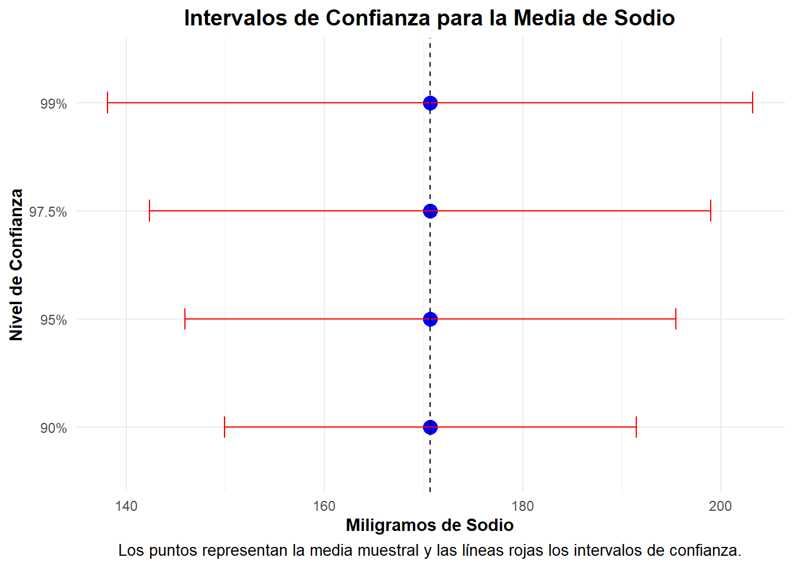

7. Muestreo aleatorio simple para seleccionar una muestra de tamaño
44 y medidas de tendencia central y dispersión de la muestra con
respecto a la variable Sodium.
# 1.Definición de la semilla para la reproducibilidad del muestreo
set.seed(123)
# 2.Se enumeran los cereales asignándoles un ID único para mantener el orden y facilitar su identificación después del muestreo.
cereal$ID_Original <- 1:nrow(cereal)
# 3.Definición del tamaño de la muestra (determinado previamente)
n_1 <- tamaño_muestra_entero
# 4. Selección de la muestra aleatoria SIN reemplazo (muestreo aleatorio simple)
muestreo_aleatorio <- sample(1:nrow(cereal), size = tamaño_muestra_entero, replace = FALSE)
# 5.Creación del subconjunto de datos con los cereales seleccionados en la muestra
muestra_aleatoria <- cereal[muestreo_aleatorio, ]
# Tabla que presenta los datos de la muestra seleccionada
datatable(muestra_aleatoria[, c("ID_Original", names(cereal)[names(cereal) != "ID_Original"])],
options = list(
pageLength = 10,
autoWidth = TRUE,
searching = TRUE,
scrollX = TRUE,
lengthMenu = list(c(10, 20, 50, -1), c("10", "20", "50", "Todos"))
), caption = "Muestra Aleatoria de Cereales",
rownames = FALSE
)
# Extraer los valores de la variable sodium de los elementos de la muestra
valores_muestra <- muestra_aleatoria$sodium
# Definir el DataFrame con las medidas estadísticas
medidas_muestra_sodium <- data.frame(
Medida_muestra = c("Media", "Mediana", "Moda", "Varianza", "Desviación Estándar", "Rango", "Coeficiente de Variación (%)"),
Valor_muestra = c(
round(mean(valores_muestra, na.rm = TRUE), 2),
round(median(valores_muestra, na.rm = TRUE), 2),
round(as.numeric(names(which.max(table(valores_muestra)))), 2),
round(var(valores_muestra, na.rm = TRUE), 2),
round(sd(valores_muestra, na.rm = TRUE), 2),
round(max(valores_muestra, na.rm = TRUE) - min(valores_muestra, na.rm = TRUE), 2),
round((sd(valores_muestra, na.rm = TRUE) / mean(valores_muestra, na.rm = TRUE)) * 100, 2) # Coeficiente de variación (%)
)
)
medidas_muestra_sodium %>%
kable(
caption = "Medidas de Tendencia Central y Dispersión",
col.names = c("Estadístico", "Valor"),
align = "c"
) %>%
kable_styling(full_width = FALSE, bootstrap_options = c("striped", "hover", "condensed")) %>%
row_spec(0, background = "#D9D9D9", bold = TRUE, extra_css = "border: 1px solid black !important;") %>%
column_spec(1:2, border_left = TRUE, border_right = TRUE) %>%
kable_classic(full_width = FALSE, html_font = "Cambria")
Medidas de Tendencia Central y Dispersión
|
Estadístico
|
Valor
|
|
Media
|
170.68
|
|
Mediana
|
180.00
|
|
Moda
|
200.00
|
|
Varianza
|
6949.52
|
|
Desviación Estándar
|
83.36
|
|
Rango
|
320.00
|
|
Coeficiente de Variación (%)
|
48.84
|
8. Muestreo sistemático para seleccionar una muestra de 40 marcas de
cereal.
# 1. Definición de la semilla para la reproducibilidad del muestreo
set.seed(123)
# 2. Definición de datos necesarios para el muestreo sistemático
n_2 <- 40 # Tamaño de la muestra
N <- nrow(cereal) # Tamaño de la población
# 3. Calcular el salto entre elementos
k <- floor(N / n_2) #Se determina cada cuántos elementos se seleccionará un dato
# 4. Cálculo de inicio del muestreo
a <- sample(1:k, 1,replace = FALSE)
# 5. Filas seleccionadas iniciando en a y saltando de k en k
filas <- seq(from = a, length.out = n_2, by = k)
# 6. Extaer de la base de datos las filas seleccionadas para la muestra
muestreo_sistematico <- cereal[filas, ]
# Visualización de resultados
cat("Tamaño de la población (N):", N, "\n")
## Tamaño de la población (N): 77
cat("Tamaño de la muestra (n):", n_2, "\n")
## Tamaño de la muestra (n): 40
cat("Salto entre elementos (k):", k, "\n")
## Salto entre elementos (k): 1
cat("Primer elemento seleccionado (a):", a, "\n")
## Primer elemento seleccionado (a): 1
# Elementos seleccionados - representación en tabla
datatable(
muestreo_sistematico[, c("ID_Original", names(cereal)[names(cereal) != "ID_Original"])],
options = list(
pageLength = 10,
autoWidth = TRUE,
searching = TRUE,
scrollX = TRUE,
lengthMenu = list(c(10, 20, 50, -1), c("10", "20", "50", "Todos"))
),
caption = " Muestra Sistemática de Cereales",
rownames = FALSE
)
Como se puede observar, el muestreo sistemático seleccionó 40
elementos de una población de 77, con un intervalo de k = 1, lo que
significa que se eligió un dato tras otro sin dejar espacios entre
ellos. Como el primer elemento seleccionado fue a = 1, la muestra quedó
compuesta por los primeros 40 registros de la base de datos. Aunque
técnicamente es un muestreo sistemático, en este caso no hay una
separación real entre los elementos seleccionados, lo que podría influir
en la representatividad si los datos siguen algún orden específico en la
población.
9. Muestreo estratificado proporcional para seleccionar una muestra
de 40 marcas de cereal estratificando por mfr (Manufacturer of
cereal).
# 1. Definición de la semilla para la reproducibilidad del muestreo
set.seed(123)
# 2. Definir los datos iniciales del muestreo estratificado
N <- nrow(cereal) #Tamaño total de la población
n_total <- 40 #Tamaño de la muestra seleccionada
r <- 7 #Número de estratos, dado que hay 7 fabricantes distintos (A, G, K, N, P, Q, R)
# 3. Crear los estratos en función del fabricante (mfr)
estrato_A <- dplyr::filter(cereal, mfr == 'A')
estrato_G <- dplyr::filter(cereal, mfr == 'G')
estrato_K <- dplyr::filter(cereal, mfr == 'K')
estrato_N <- dplyr::filter(cereal, mfr == 'N')
estrato_P <- dplyr::filter(cereal, mfr == 'P')
estrato_Q <- dplyr::filter(cereal, mfr == 'Q')
estrato_R <- dplyr::filter(cereal, mfr == 'R')
# 4. Calcular la fracción de muestreo
w <- n_total / N #Proporción de la población que será incluida en la muestra
print(paste("Fracción de muestreo (w):", round(w, 4)))
## [1] "Fracción de muestreo (w): 0.5195"
# 5. Determinar el tamaño de cada estrato en la población
N_A <- nrow(estrato_A)
N_G <- nrow(estrato_G)
N_K <- nrow(estrato_K)
N_N <- nrow(estrato_N)
N_P <- nrow(estrato_P)
N_Q <- nrow(estrato_Q)
N_R <- nrow(estrato_R)
# Mostrar la distribución inicial de los estratos en la población
print(data.frame(Estrato = c("A", "G", "K", "N", "P", "Q", "R"),
Población = c(N_A, N_G, N_K, N_N, N_P, N_Q, N_R)))
## Estrato Población
## 1 A 1
## 2 G 22
## 3 K 23
## 4 N 6
## 5 P 9
## 6 Q 8
## 7 R 8
# 6.Calcular el tamaño de la muestra en cada estrato (muestreo proporcional)
n_A <- floor(N_A * w)
n_G <- floor(N_G * w)
n_K <- floor(N_K * w)
n_N <- floor(N_N * w)
n_P <- floor(N_P * w)
n_Q <- floor(N_Q * w)
n_R <- floor(N_R * w)
#Mostrar el tamaño de muestra proporcional calculado antes del ajuste
print(
data.frame(
Estrato = c("A", "G", "K", "N", "P", "Q", "R"),
Muestra_Proporcional = c(n_A, n_G, n_K, n_N, n_P, n_Q, n_R)
))
## Estrato Muestra_Proporcional
## 1 A 0
## 2 G 11
## 3 K 11
## 4 N 3
## 5 P 4
## 6 Q 4
## 7 R 4
# 7. Verificar si la suma de la muestra coincide con n_total y ajustar si es necesario
tamaño_muestra_calculado <- n_A + n_G + n_K + n_N + n_P + n_Q + n_R
print(paste("Tamaño total de la muestra calculada antes del ajuste:", tamaño_muestra_calculado))
## [1] "Tamaño total de la muestra calculada antes del ajuste: 37"
# Ajuste de muestra si la suma no es exactamente 40
diferencia <- n_total - tamaño_muestra_calculado
if (diferencia != 0) {
print(paste("Ajuste requerido: faltan", diferencia, "elementos."))
# Ordenar los estratos de mayor a menor tamaño para asignar los +1
estratos_ordenados <- data.frame(
Estrato = c("A", "G", "K", "N", "P", "Q", "R"),
N = c(N_A, N_G, N_K, N_N, N_P, N_Q, N_R)
) %>%
arrange(desc(N))
# Asignar los +1 a los estratos más grandes
for (i in 1:abs(diferencia)) {
estrato_seleccionado <- estratos_ordenados$Estrato[i]
if (estrato_seleccionado == "A") n_A <- n_A + 1
if (estrato_seleccionado == "G") n_G <- n_G + 1
if (estrato_seleccionado == "K") n_K <- n_K + 1
if (estrato_seleccionado == "N") n_N <- n_N + 1
if (estrato_seleccionado == "P") n_P <- n_P + 1
if (estrato_seleccionado == "Q") n_Q <- n_Q + 1
if (estrato_seleccionado == "R") n_R <- n_R + 1
print(paste("Se añadió +1 al estrato:", estrato_seleccionado))
}
}
## [1] "Ajuste requerido: faltan 3 elementos."
## [1] "Se añadió +1 al estrato: K"
## [1] "Se añadió +1 al estrato: G"
## [1] "Se añadió +1 al estrato: P"
# 9. Mostrar la distribución final de la muestra
print(
data.frame(
Estrato = c("A", "G", "K", "N", "P", "Q", "R"),
Muestra_Final = c(n_A, n_G, n_K, n_N, n_P, n_Q, n_R)
), row.names = FALSE)
## Estrato Muestra_Final
## A 0
## G 12
## K 12
## N 3
## P 5
## Q 4
## R 4
# 10. Seleccionar aleatoriamente las muestras de cada estrato
muestra_A <- dplyr::sample_n(estrato_A, n_A)
muestra_G <- dplyr::sample_n(estrato_G, n_G)
muestra_K <- dplyr::sample_n(estrato_K, n_K)
muestra_N <- dplyr::sample_n(estrato_N, n_N)
muestra_P <- dplyr::sample_n(estrato_P, n_P)
muestra_Q <- dplyr::sample_n(estrato_Q, n_Q)
muestra_R <- dplyr::sample_n(estrato_R, n_R)
# 11. Unir todas las muestras en un solo dataframe
muestra_final <- dplyr::bind_rows(muestra_A, muestra_G, muestra_K, muestra_N, muestra_P, muestra_Q, muestra_R)
datatable(
muestra_final,
options = list(
pageLength = 10,
autoWidth = TRUE,
searching = TRUE,
scrollX = TRUE,
lengthMenu = list(c(10, 20, 50, -1), c("10", "20", "50", "Todos"))
),
caption = "Muestra Estratificada de Cereales por Fabricante",
rownames = FALSE
)
El muestreo estratificado nos permitió seleccionar 40 marcas de
cereal, asegurando que cada fabricante estuviera representado de manera
justa según su presencia en la población. La distribución final fue: G
(12), K (12), N (3), P (5), Q (4), R (4) y A (0). Se ajustaron los
valores para que el total sumara exactamente 40, manteniendo el
equilibrio en la muestra. Un detalle interesante es que el fabricante A
no quedó en la selección, lo que indica que tenía muy pocos productos en
la base de datos. En general, como se puede observar, este tipo de
muestreo permite que cada fabricante esté representado en la muestra
según su presencia en la población total, lo que permite obtener un
análisis más representativo y confiable sobre la distribución de los
fabricantes de cereal.
10. Empleando la muestra obtenida en el punto 7, obtenga un
intervalo del 90%, 95%, 97.5% y 99%. Compara los errores de estimación y
establece una conclusión.
Teniendo en cuenta que en el apartado 7 se realizó un muestreo
aleatorio simple para seleccionar una muestra de tamaño \(n = 44\), este valor será considerado en el
cálculo de los siguientes intervalos de confianza. Asimismo, emplearemos
la media muestral \(\bar{x}\), obtenida
a partir de dicha muestra con respecto a la variable Sodium, para
desarrollar los cálculos. Dado que se conoce la desviación estándar
poblacional de esta variable (apartado de estadística descriptiva),
utilizaremos la fórmula del intervalo de confianza para muestras grandes
\((n \geq 30)\), cuando la desviación
estándar poblacional es conocida:
\[
IC = \bar{x} \pm Z_{\alpha/2} \left( \frac{\sigma}{\sqrt{n}} \right)
\]
1. Definición de datos
muestra_confianza<-44 #Tamaño de muestra tomada del punto 7
media_muestral <- mean(valores_muestra, na.rm = TRUE)
desvest_poblacion <- sd(cereal$sodium)
nivel_confianza <- c(0.90,0.95,0.975,0.99)
cat("Tamaño de la muestra (n):", muestra_confianza, "\n")
## Tamaño de la muestra (n): 44
cat("Media muestral (x̄):", round(media_muestral, 4), "\n")
## Media muestral (x̄): 170.6818
cat("Desviación estándar poblacional (σ):", round(desvest_poblacion, 4), "\n")
## Desviación estándar poblacional (σ): 83.8323
cat("Niveles de confianza:", nivel_confianza * 100, "%\n")
## Niveles de confianza: 90 95 97.5 99 %
2. Calcular valores crítcos
z_valores <- qnorm(1 - (1 - nivel_confianza) / 2)
tabla_z <- data.frame(
Nivel_Confianza = nivel_confianza * 100,
Z_Negativo = round(-z_valores, 4),
Z_Positivo = round(z_valores, 4)
)
print(tabla_z)
## Nivel_Confianza Z_Negativo Z_Positivo
## 1 90.0 -1.6449 1.6449
## 2 95.0 -1.9600 1.9600
## 3 97.5 -2.2414 2.2414
## 4 99.0 -2.5758 2.5758
3. Cálcular el intervalo de confianza
#Calcular el margen de error
margen_error_ic <- z_valores * (desvest_poblacion/ sqrt(muestra_confianza))
#Se suma a la estimación puntal (media muestral) el margen de error para obtener el los limites inferior y superior
l_i<- media_muestral - margen_error_ic
l_s<- media_muestral + margen_error_ic
Intervalos de Confianza y su Interpretación
|
Nivel_Confianza
|
Margen_Error
|
Intervalo
|
Interpretación
|
|
90%
|
20.7880
|
[149.8938, 191.4698]
|
Con un 90 % de confianza, la cantidad promedio de sodio en los cereales
está entre 149.8938 y 191.4698 miligramos.
|
|
95%
|
24.7704
|
[145.9114, 195.4522]
|
Con un 95 % de confianza, la cantidad promedio de sodio en los cereales
está entre 145.9114 y 195.4522 miligramos.
|
|
97.5%
|
28.3273
|
[142.3545, 199.0091]
|
Con un 97.5 % de confianza, la cantidad promedio de sodio en los
cereales está entre 142.3545 y 199.0091 miligramos.
|
|
99%
|
32.5538
|
[138.128, 203.2356]
|
Con un 99 % de confianza, la cantidad promedio de sodio en los cereales
está entre 138.128 y 203.2356 miligramos.
|
La próxima gráfica muestra mejor la comparativa de los niveles de
confianza y su margen de error:

Como se puede evidenciar, a medida que el nivel de confianza aumenta,
el margen de error también se incrementa, ampliando los rangos de
estimación. Por ejemplo, con un 90% de confianza, la cantidad promedio
de sodio está entre 149.89 y 191.47 mg, mientras que con un 99%, el
intervalo se extiende de 138.13 a 203.24 mg. Por tanto, se podría decir
queun mayor nivel de confianza ofrece más certeza de que la media real
se encuentre dentro del intervalo, pero a costa de perder precisión en
la estimación. Por el contrario, un margen de error más pequeño mejora
la exactitud, pero con menor certeza.
En este contexto, es evidente que si queremos un mayor nivel de
confianza esto implica abarcar un rango más extenso de valores para
asegurarnos de que la media poblacional real se encuentre dentro del
intervalo, y teniendo en cuenta que el margen de error es lo que se le
suma o resta a la estimación puntual, una mayor amplitud del intervalo
refleja un margen de error más grande, lo que significa que el valor
real tiene más espacio para variar en ambas direcciones.
Asimismo, esta relación directa entre el margen de error y el
intervalo de confianza se puede verificar con la fórmula para el cálculo
del margen de error. Como se muestra a continuación, el incremento del
nivel de confianza implica aumentar el valor crítico \(Z_{\alpha/2}\), lo que a su vez incrementa
el margen de error, ampliando el intervalo. De la misma manera, podemos
inferir que, si disminuimos el tamaño de la muestra o aumentamos la
variabilidad de los datos poblacionales, el margen de error también
aumentaría. Esto se traduce en una mayor incertidumbre en la estimación
y una menor precisión.

Nota: Tabla de elaboración propia
